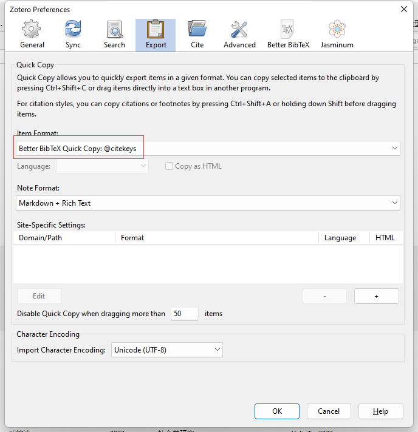
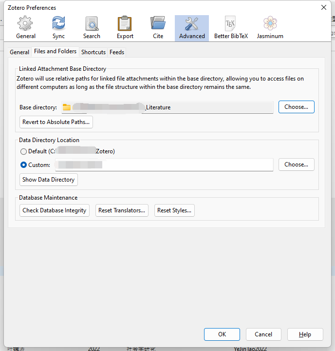
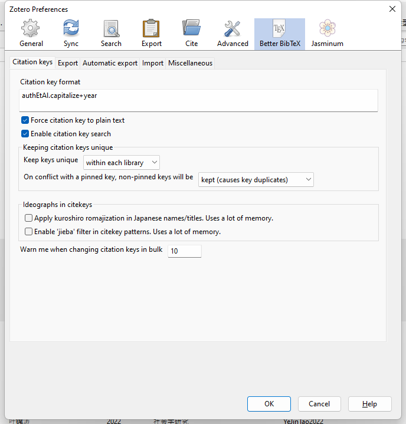

1 Zotero 文献管理
Zotero是在我尝试过Endnotes和Jabref后长期使用的文献管理软件。 功能过于强大且免费。 以下结合Zotero与本组研究相关比较密切的一些功能和设置进行说明。1
1.1 Zotero 6.0（及插件）的安装和注册
1.于官网Zotero | Home进行下载并完成安装。（Chrome插件后期会自动安装） 2.回到官网进行注册,记住注册信息。
3.回到软件端。打开软件：编辑——首选项——同步——设置，输入用户名和密码进行登陆。 
4.下载插件 - ZotFile, 用来管理PDF文件; - Better BibTeX, 将library导出为bib.格式与RMarkdown联动。 - Jasminum, 让Zotero更好适配知网。
下载完成后进入软件-工具-插件-设置（齿轮标识）-Install Add-on From File-安装已经下载的两个插件。

1.2 修改设置
1.2.1 常规 general

1.2.2 同步 sync

选择自动同步，取消选择[同步全文]，（zotero只有300MB文件储存空间，可配置云端同步进行解决，见后文。）
1.2.3 搜索
保持默认即可。
1.2.4 导出

1.2.5 引用
针对参考文献格式的设置。点击[获取更多样式]进入Zotero远程引文格式库。引文格式也可以通过.csl本地文件进行导入，点击[+]。
在”文字处理软件”(Word Processors)中安装MS Word加载项。

1.2.6 高级
文件储存位置：编辑-首选项-高级-文件和文件夹(Files and Folders)
设置根目录(Based directory)和数据存储位置。 根目录中存储文章的pdf文件，可酌情放在较空的硬盘中。
数据储存位置（Data directory location）仅包含Zotero中的引录信息。
后期如须多设备同步可将根目录文件夹进行云同步处理。

1.2.7 Better BibTeX
在安装Better BibTeX扩展程序后，将显示此选项卡。 安装扩展将整个书目库（或其某些部分）导出为纯.bib文本文件。 在使用rmarkdown撰写学术论文时，需要此步骤才能在RStudio中使用Zotero。
变更Citation key 格式, 推荐格式authEtAl.capitalize+year。2

自动输出（Automatic export）设置：

1.3 Jasminum 设置
之前请按照提示，先安装PDFtk Server。

1.3.1 ZotFile 设置
【工具】-【ZotFile preference】

在这里，我们定义了两条路径。 第一个是浏览器下载的文件的默认位置。
第二条路径指向为全文PDF创建的本地目录，我将其命名为zotero-library，并与我们选择的外部云解决方案同步。
下面的use subfolder defined by xxx的表示：根据paper的xxx来给论文分类（以再创建二级文件夹的方式） /%a的意思是按照作者名称分类。
1.3.2 Renaming Rules
设置附件的重命名格式, 推荐以下设置{%a}{%y_}{%t}。

1.4 手动重命名附件
在具体的条目中点击【附件】-【重命名附件】

1.5 Zotero 与RMarkdown联动
用插件 Better BibTeX 实现RMarkdown 中的自动引用功能。
Better BibTeX提供了一种简便的方法，可以将Zotero的书目记录导出为纯.bib文本，并在记录更改后保持文件更新。只需右键单击Zotero中的集合，然后选择“导出集合”。

选择持续更新。

输出的.bib文件应放置在我们要编织.rmd文件的目录中。 .bib的名称在.rmd的YAML标头中指定。示例如图。

关于R部分的更多信息请参考：
祝贺！你已经完成了设置，请奖励自己一只鸡腿！
更多设置详见cite key 设置查阅手册。↩︎